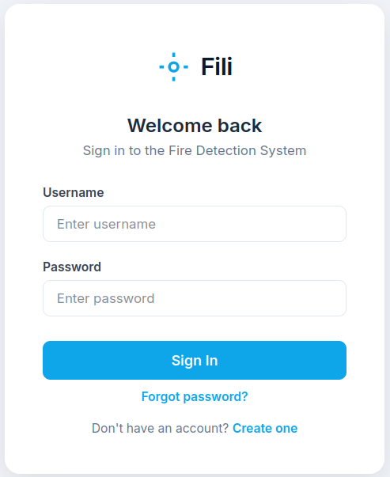
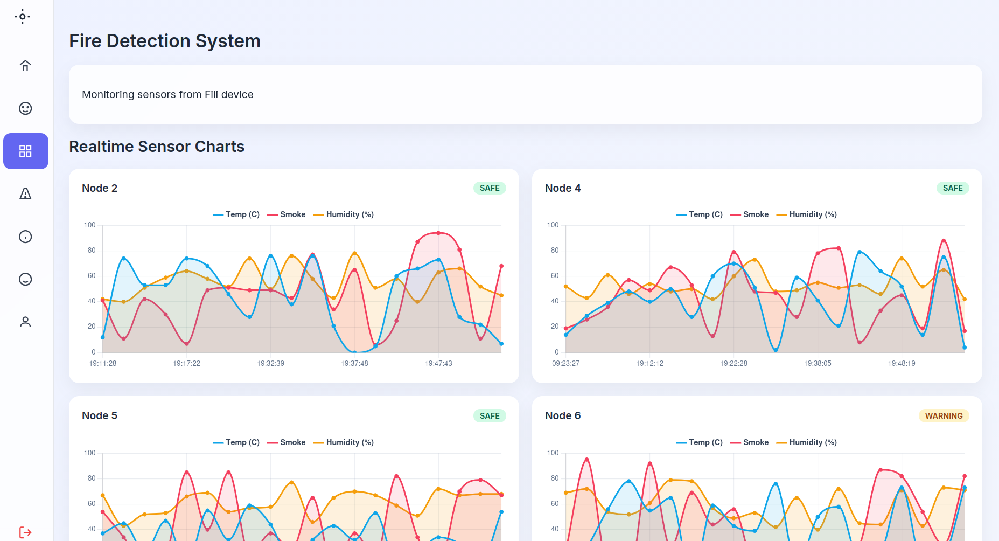
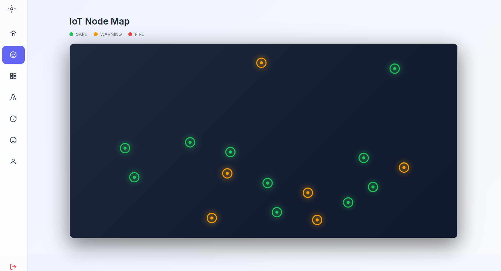
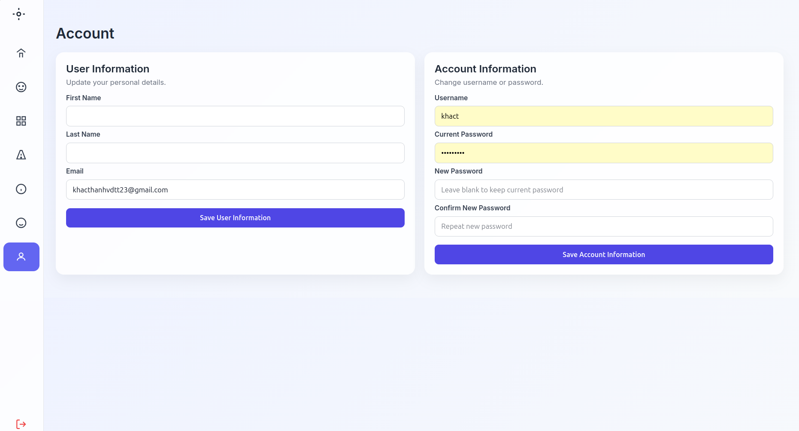

Sensor Node 1 · Sensor Node 2 · Sensor Node 3
Contiki-NG sensor nodes collect temperature, smoke, and humidity in a wireless mesh.
An IoT-based platform designed to collect, process, and visualize environmental sensor data from multiple wireless sensor nodes in real time.
The system utilizes Contiki-NG and the RPL routing protocol to simulate a wireless sensor network. Sensor data is transmitted through a Border Router and processed by a Django backend service. The backend stores sensor readings in a Neon PostgreSQL database, performs fire detection analysis, manages user authentication, and sends automated email notifications when abnormal conditions are detected.
A web-based dashboard built with HTML, CSS, JavaScript, AJAX, and Chart.js provides real-time visualization of temperature, smoke, and humidity data while allowing users to monitor the status of individual sensor nodes.
Python • JavaScript • HTML • CSS
Django • Django ORM • TCP Socket Programming
PostgreSQL (Neon)
Chart.js • AJAX • Fetch API
Contiki-NG • RPL Routing Protocol • Border Router
Django Authentication • Session Management • Gmail SMTP
Git • Linux • VS Code
A modern, theme-matching diagram with chrome-inspired gradients and hover glow for each architecture block.
Contiki-NG sensor nodes collect temperature, smoke, and humidity in a wireless mesh.
Gateway chuyển tiếp dữ liệu từ mạng RPL vào hệ thống backend.
Xử lý dữ liệu, xác thực, phát hiện cháy và điều phối cảnh báo.
Lưu trữ readings theo thời gian thực, phục vụ truy vấn nhanh và báo cáo.
Gửi thông báo tự động khi giá trị cảm biến vượt ngưỡng nguy hiểm.
Dashboard web hiện thị biểu đồ và trạng thái node theo thời gian thực.
Secure login interface developed using Django Authentication Framework. The system supports user registration, login validation, session management, password recovery, and automatic session expiration after inactivity to enhance account security.
Technologies: Django Authentication, Sessions, SMTP password reset, secure cookie settings, CSRF protection.

Interactive monitoring dashboard displaying temperature, smoke, and humidity data from multiple IoT sensor nodes. Data is retrieved from the Django backend through AJAX requests and visualized in real time using Chart.js. Each node is automatically classified into SAFE, WARNING, or FIRE states based on predefined detection thresholds.
Technologies: Chart.js, AJAX/Fetch, Django REST endpoints, WebSocket (optional for push updates), threshold-based classification logic.

Graphical representation of sensor node deployment and operational status within the monitored environment. Node colors indicate current conditions, allowing users to quickly identify abnormal activity and potential fire hazards across the network.
Technologies: Leaflet / D3.js (optional), SVG overlays, realtime status layers from backend endpoints.

Account management module enabling users to update personal information, change credentials, and manage account settings. Password modifications require current password verification, ensuring secure account administration.
Technologies: Django Forms, Authentication, Secure Password Change, Email verification, Account settings API.
